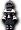

| 冰之女僕（紫） | Lv | AC | MC | AAR | SAR |
| HP:17,100 | 80 | 50 | 15 | 35 | 20 |
| 經驗值 | 名聲值 | 金錢 | 攻擊屬性 | 防禦屬性 | |
| 6746(98) | 406 | 400~417 | 隨機 | 隨機 | |
| STR | DEX | CON | INT | WIS | |
| 99 | 99 | 99 | 25 | 66 |
備註：
掉落物品
大斧、鑽頭臂、帕潘琵琶、軍團頭盔、假面玫瑰頭盔、軍事瓦特、柑橘夾克、山峰頭罩、格雷斯頭罩、

強化戰士騎寵服、強化武道家騎寵服、強化盜賊騎寵服、強化聖職者騎寵服、強化魔法師騎寵服、強化騎士騎寵服、強化吟遊詩人騎寵服、荷普利、 黑暗治療藥水、
黑暗治療藥水、 [116]冰之女僕變身捲軸
[116]冰之女僕變身捲軸